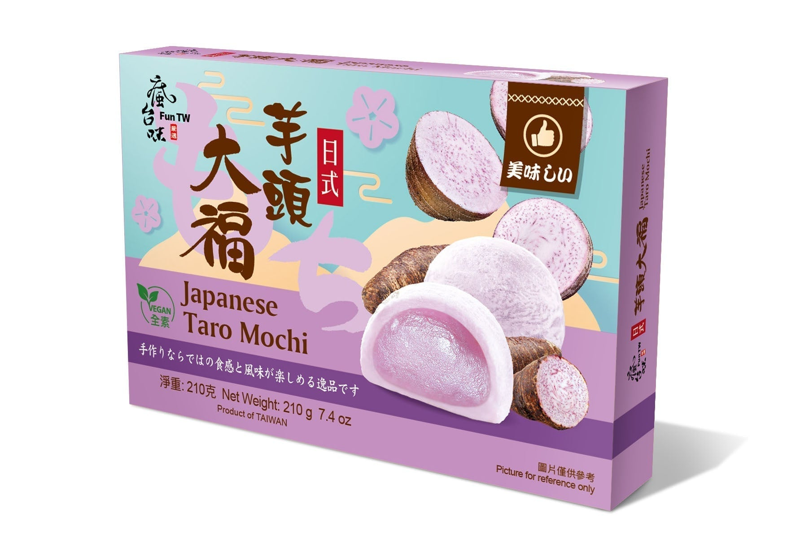
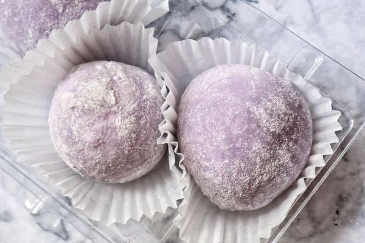

<div> <table style="border-collapse: collapse; width: 99.9809%;" border="1"><colgroup><col style="width: 49.9522%;"><col style="width: 49.9522%;"></colgroup> <tbody> <tr> <td> <div><span style="font-size: 14pt;"><strong>Desert Mochi cu pasta de Taro</strong></span></div> <div><span style="font-size: 14pt;"><strong>210g</strong></span></div> <div><span style="font-size: 14pt;">Descopera desertul traditional reinterpretat perfect! Realizate in Taiwan dupa o reteta autentica si 100% vegana, aceste prajiturele imbina invelisul fraged din orez cu aroma delicata si dulceata naturala a radacinii de taro. Sunt desertul ideal pentru a fi impartit cu cei dragi alaturi de o ceasca de ceai cald.</span></div> </td> <td></td> </tr> <tr> <td></td> <td><span style="font-size: 14pt;">O delicatesa asiatica absolut irezistibila, cu o textura incredibil de moale, elastica si catifelata. Aceste prajiturele mochi sunt pudrate fin la exterior si ascund o inima extrem de cremoasa, oferind un rasfat exotic si fin la fiecare muscatura.</span></td> </tr> </tbody> </table> </div>